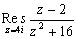

殘數
程式可以估算複函數的殘數值(Complex Residue)。
程式編寫日期: 2007年4月1日
注意: πr 是按 Shift EXP Shift Ans 2，o 是按 Shift Ans 1
程式 (最少60 bytes)
Mem clear: ?→A: Abs A: . 01(Ans + (Ans=0→B:
Lbl 0: A + B∠C: (Ans - 2) ÷ (Ans2 + 16:
Ans(B∠CM+: C + 18o→C: 2πr > C => Goto 0:
M ÷ 20
注意: 綠色的(Ans - 2) ÷ (Ans2 + 16是函數方程(變數是Ans)，若果想計算其它函數的殘數值，只要修改綠色的部份。
例題: 計算

按 Prog 1 再按 4i EXE (顯示0.5) 再按 Shift Re<=>Im (顯示0.25i)
所以殘數為 0.5 + 0.25i
註: 由於程式使用梯形法則計算殘數，所以計算時間會較長。
有關殘數的資料，可以參考以下網址:
Complex Residue -- from Wolfram MathWorld